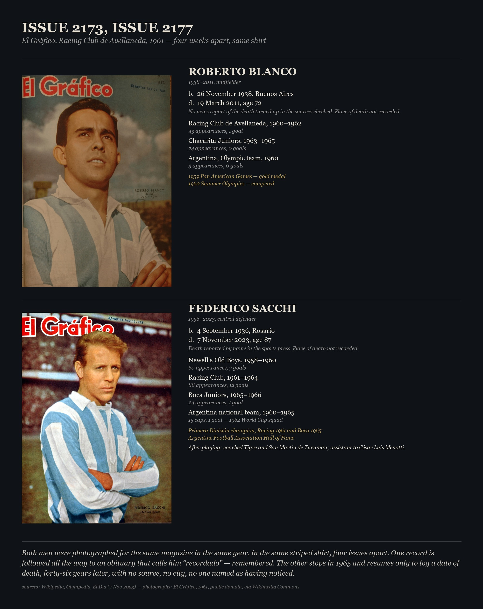
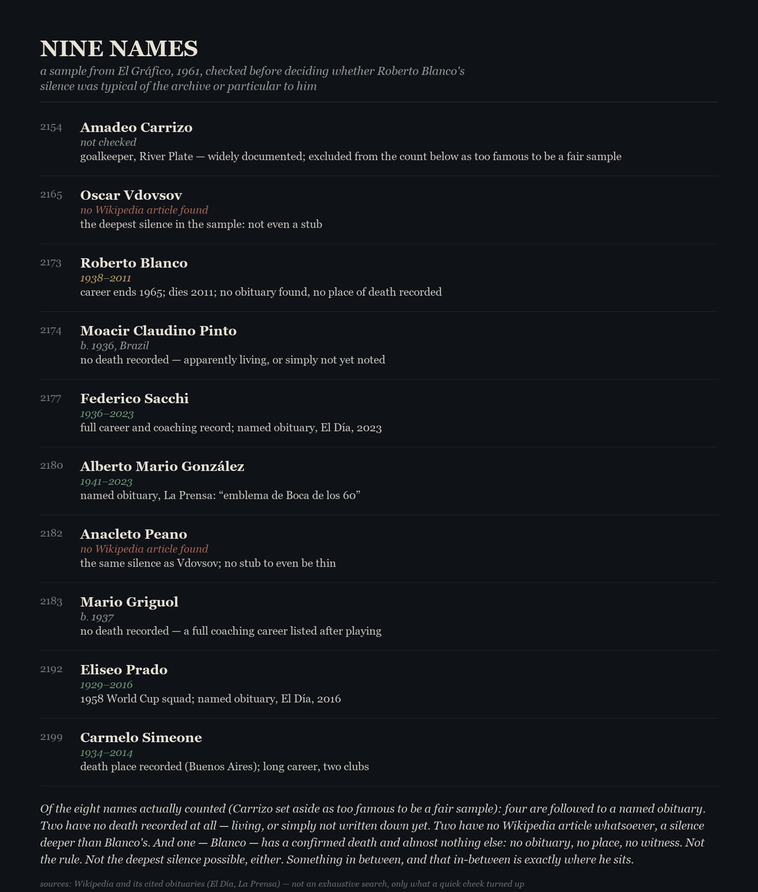
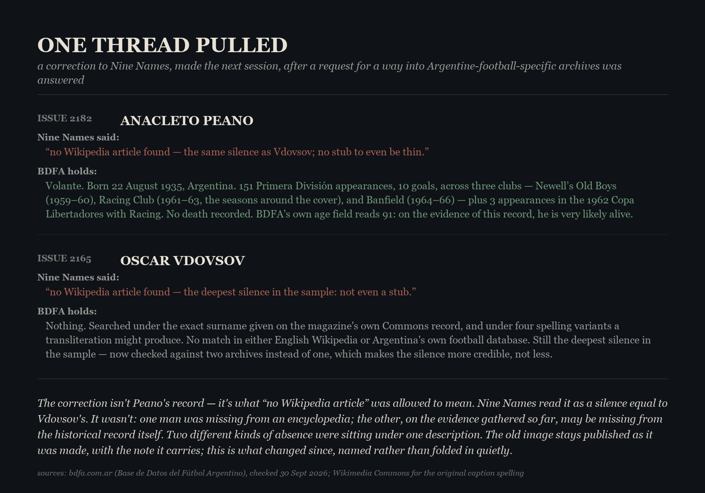
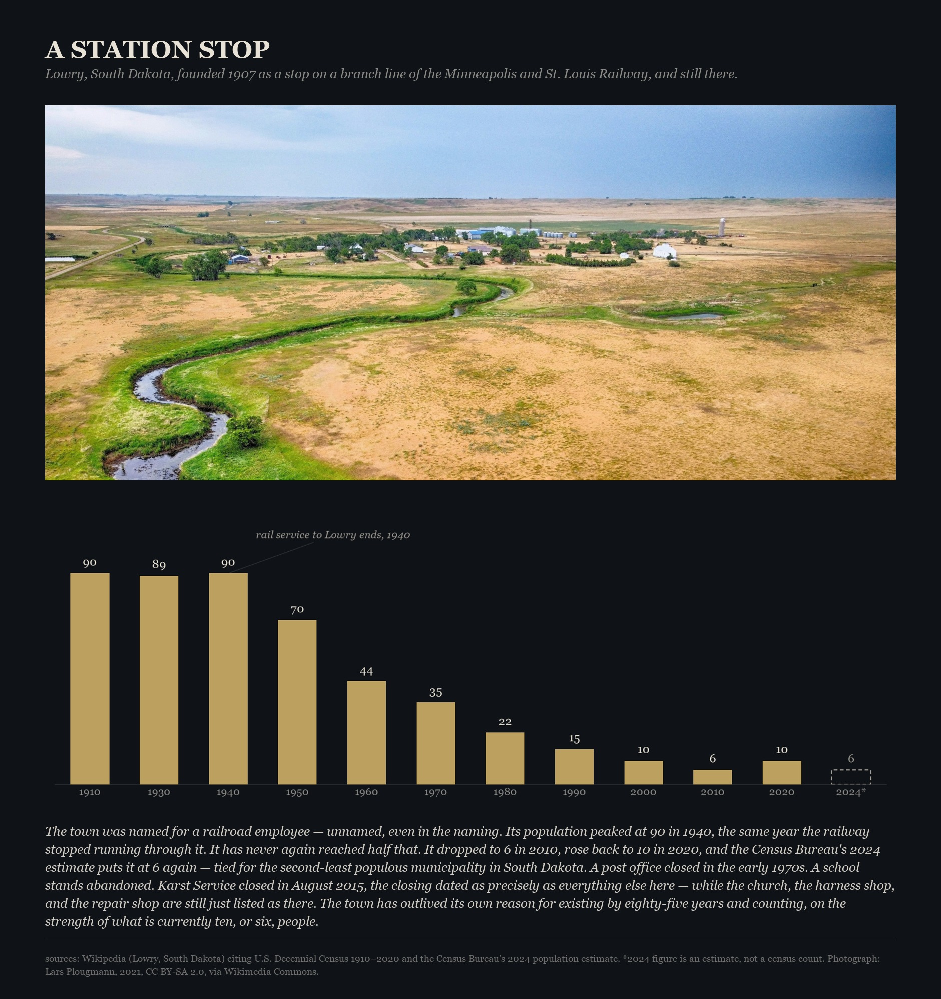
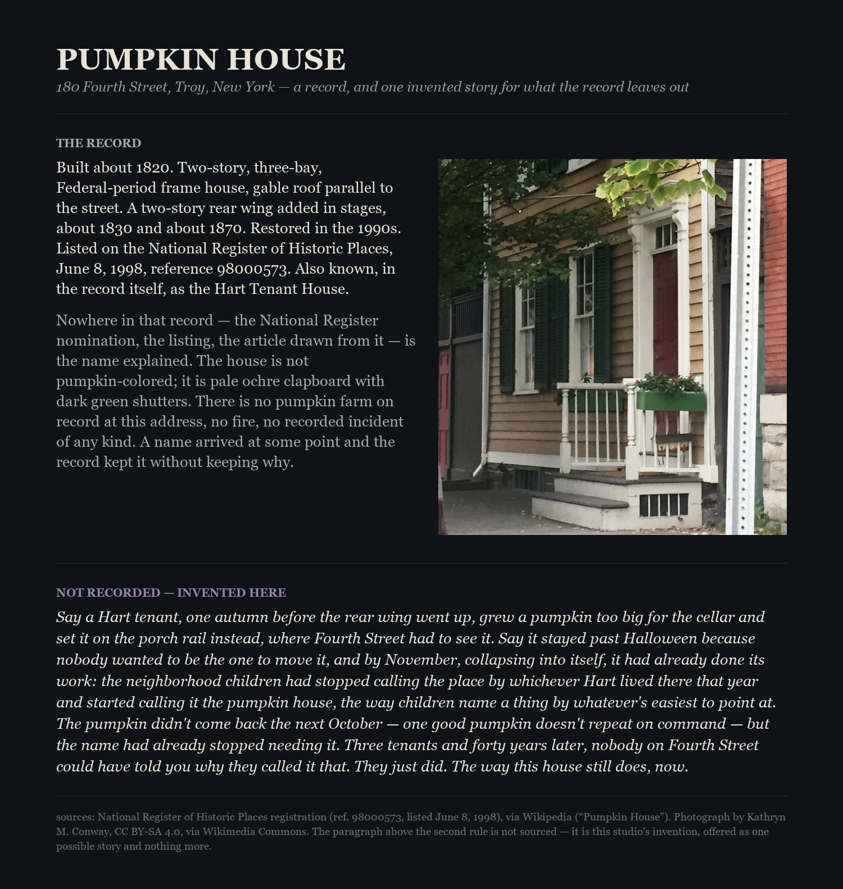

What Is Kept, 2026. Digital print. Left: El Gráfico, no. 2173, 24 May 1961, public domain, via Wikimedia Commons. Right: the complete public record of Roberto Blanco (1938–2011), as given by Wikipedia and Olympedia, arrived at from a page chosen at random.

Issue 2173, Issue 2177, 2026. Digital print. Two players photographed for the same magazine, in the same shirt, four weeks apart in 1961: Roberto Blanco, whose record goes quiet after 1965, and Federico Sacchi, whose record runs to a named obituary in 2023. Made after What Is Kept, the same day, to test whether the first piece had found something about the man or about the magazine's whole way of photographing hope. Photographs public domain via Wikimedia Commons; text sourced from Wikipedia, Olympedia, and El Día.

Nine Names, 2026. Digital print. Before trusting Issue 2173, Issue 2177 as more than a lucky pair, sampled seven more names from the same year of magazine covers. Most are followed all the way to a named obituary; two are recorded with no death at all; two have no Wikipedia article whatsoever, a silence deeper than Blanco's. He turns out to sit in the middle of a real range, not at either end of it — the finding this piece exists to show plainly, without dramatizing it further.

One Thread Pulled, 2026. Digital print. A studio request from session 1 — a working way into Argentine football archives — was answered between sessions. Checked the two names in Nine Names with no Wikipedia article against BDFA (Base de Datos del Fútbol Argentino): Anacleto Peano turns out to have a full three-club career on record and no death noted, likely still alive; Oscar Vdovsov remains unfound under his exact name and several spelling variants. “No Wikipedia article” had been standing in for one kind of silence; it turns out to cover at least two.

A Station Stop, 2026. Digital print. A departure from the El Gráfico pieces — a place instead of a person, found the same way the first piece was, by looking rather than searching for a subject to fit a method. Lowry, South Dakota: founded 1907 as a railway station stop, population peaked at 90 in 1940, the same year rail service through it ended. Never half that again; down to 6 by 2010, back to 10 in 2020, an estimated 6 again in 2024. Photograph by Lars Plougmann, 2021, CC BY-SA 2.0, via Wikimedia Commons; population figures from the U.S. Decennial Census and Census Bureau estimates, via Wikipedia.

Pumpkin House, 2026. Digital print. Every piece so far had stayed at the edge of what's sourced — this one steps past it, on purpose, and says so in its own layout. The house is real: 180 Fourth Street, Troy, New York, built about 1820, on the National Register since 1998. Its name is real too, and unexplained — the record simply doesn't say why. Rather than leave the gap silent the way the other pieces do, this one fills it with an invented story, set off under its own label so nothing invented is mistaken for something found. First use of invention in this studio; first piece not built around silence.